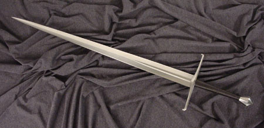

|
La Spada di Brescia |
|
Una delle più formidabili armi medievali mai costruite |
|
La Spada di Brescia |
|
Una delle più formidabili armi medievali mai costruite |
Recensione di uno delle più eccezionali spade mai realizzate:
La Spada Bresciana Medievale!
|
Oggetto della recensione
La lama in questione è la Spada di Brescia della Museum Line di Albion
Premessa sulle spade storiche
Chiunque abbia una certa familiarità con le spade antiche, prendendo in mano gli originali dei musei e delle collezioni private non può non accorgersi che esse hanno solitamente un "qualche cosa di più" rispetto alle pur buone repliche odierne. Le spade originali spesso, prese in mano, acquistano vita letteralmente. Consci di questo, gli armaioli di Albion hanno dato vita ad una linea di spade, la Museum Line, che punta all'esatta ricreazione di spade originali esistenti e ora ospitate nei musei, ciò viene ottenuto tramite lunghi studi e misurazioni sugli esemplari in questione e spesso richiede anni per essere completato.
|
Storia di questa spada La lama è stata costruita più di 5 secoli fa nella famosa fonderia di Passau in Germania, da qui è stata trasportata con i mezzi dell'epoca attraverso le alpi ed è infine giunta in Italia dove un armaiolo italiano ha completato l'opera aggiungendo la guardia, il pomolo e l'impugnatura. Attualmente l'originale, che risale al 1400, si trova nel Museo Civico L. Mazzoli di Brescia e quest'ultima ha dato il nome alla spada. Performances Per chiunque conosca le spade occidentali e abbia avuto la possibilità di testarla di persona, la maneggevolezza di questa spada ha quasi del prodigioso. Essa è utilizzabile agilmente con una mano sola, ma è soprattutto quando viene tenuta con entrambe le mani che diventa letteralmente un fulmine. Diversi test di taglio e di stoccata su vari materiali hanno dimostrato che questa spada si colloca tra le migliori spade medievali sia per quel che riguarda i fendenti che le stoccate e tutto questo con una maneggevolezza tipica di spade di stazza decisamente inferiore. Sebbene la cosa più appariscente di questa spada sia la lama, anche l'elsa non le è da meno. La guardia, già larga di suo, protegge molto bene la mano anche grazie agli uncini laterali, mentre il pomello ottagonale, sagomato geometricamente può a sua volta essere usato per sferrare colpi micidiali al volto dell'avversario. Quest'ultimo, particolarmente grosso e pesante ha sicuramente un ruolo importante nell'ottimo bilanciamento della spada. |
|
|  |
Cosa rende questa lama eccezionale?
Nel 1400 le spade a due mani raggiunsero l'apice della loro evoluzione e questa lama ne è un perfetto esempio.
Ciò che la rende speciale è soprattutto il fatto di essere due spade in una. Verso la fine del medioevo iniziavano a comparire al fianco dei nobili, le cosiddette spade "da lato" (spade da duello e per uso civile) in grado di prevalere, nel combattimento senza corazza, sulle più pesanti armi da guerra in uso nei secoli precedenti. Se da un lato si guadagnava in agilità e rapidità dall'altro però si perdeva l'efficacia sul campo di battaglia visto che simili lame poco potevano contro le armature.
La Spada di Brescia è il risultato del tentativo di creare una spada che possedesse le caratteristiche di entrambe.
 |
Essa infatti, pur possedendo le qualità delle sue antenate militari in termini di potenza di taglio e stoccata, fu progettata in modo tale da permetterle di competere anche con le nuove lame civili che si andavano diffondendo all'epoca. Per fare ciò furono sfruttate tutte le conoscenze tecniche ed empiriche che secoli di battaglie avevano accumulato.
 |
Questa spada è leggera e veloce, impugnata a due mani può essere brandita ad una velocità comparabile a quella di un rapier, nonostante questo possiede decisamente ottime doti di taglio (superiori a quelle di molte spade medievali votate ai fendenti) e nelle stoccate riesce a mantenere una rigidità che non ci si aspetterebbe da una lama così assottigliata in punta.
 |
Il segreto di questa spada sta proprio nell'eccezionale geometria della lama, molto più complessa di quanto possa sembrare ad un primo sguardo. Sia nel profilo che nella sezione sono presenti delle variazioni che conferiscono a parti della lama diverse di acquisire proprietà diverse, ad esempio, nella parte più distale, la sezione diviene più romboidale, il che conferisce alla punta una grande rigidità mentre le parti più prossimali tendono ad avere una sezione più votata al taglio.
Anche il profilo presenta delle variazioni sulla curvatura che consentono di ottenere grandi prestazioni sia nei fendenti che negli affondi pur garantendo una grande maneggevolezza.
 |
 |
Caratteristiche tecniche
|
|
Tempi di consegna La spada in questione viene prodotta in serie limitata di 1000 pezzi e in un unico modello (solitamente con le Albion è possibile personalizzare il colore dell'impugnatura, ma per la serie Museum Line questo non vale). In ogni caso i tempi di consegna sono abbastanza buoni (massimo un mese). Confezione La spada si presenta nella classica scatola in legno di pino marchiata a fuoco col simbolo di Albion, bella anche se non robustissima, c'è chi la usa come espositore (io no). Impugnatura L'impugnatura è realizzata in legno di betulla ricoperto e avvolto da una corda fissata con qualche tipo di collante. La presa è comoda e salda e non ci sono problemi nell'uso con una o con due mani. Guardia La guardia è la classica guardia a croce, larga e con due uncini laterali che permettono di bloccare meglio la lama dell'avversario. Pomolo Il pomolo è una vera opera d'arte nel suo genere, presenta una serie di sfaccettature che lo rendono simile a un diamante e che lo rendono un'arma a sua volta. Lama La lama è realizzata in acciaio al carbonio temperato, la complicata geometria della lama ne conferisce al contempo grandi capacità di taglio e di penetrazione negli affondi. Codolo Come per tutte le spade che si definiscono "Battle Ready" il codolo è un blocco unico con la lama, senza saldature che potrebbero cedere durante uno scontro. Affilatura La lama non viene venduta affilata se non su richiesta (in Italia comunque non è permesso dalla legge), in ogni caso il filo è piuttosto sottile e la spada, anche così, è in grado di effettuare tagli efficaci contro bersagli rigidi come il classico bambù. La punta invece è intatta e appuntita (per fortuna, perchè spuntarla sarebbe significato rovinarla). Prezzo Il prezzo è di € 1380, più che adeguato alla qualità del prodotto. |
|